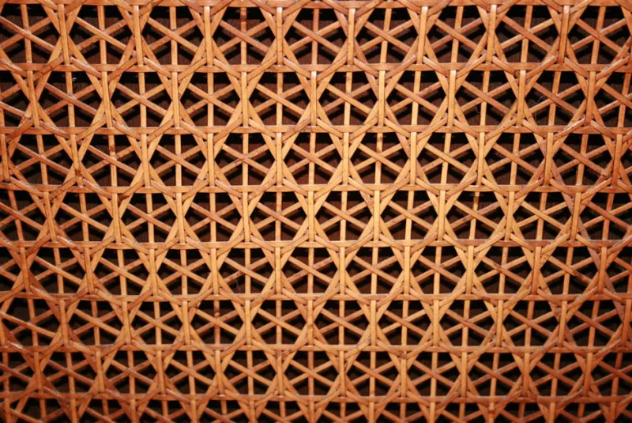
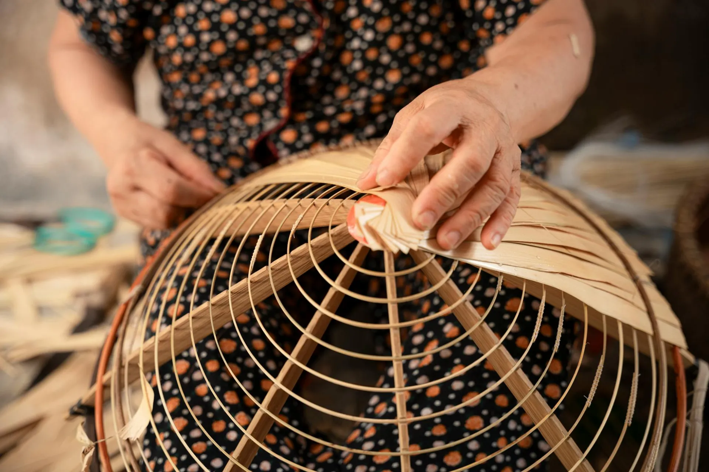
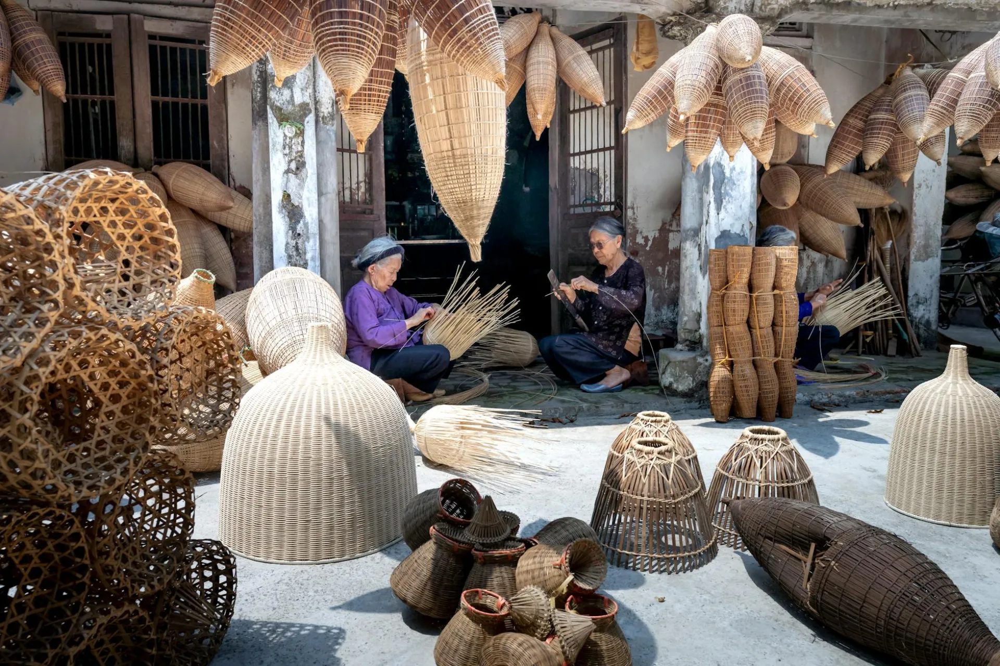

Category 01
Harvest Baskets
The oldest form in our repertoire. Harvest baskets follow patterns carried forward from the Edo period, now elevated into gallery-quality objects. Each basket takes between three and six weeks to complete.


Five categories of handcrafted bamboo work — each a studied discipline in its own right, each bearing the signature character of TAKE.
The oldest form in our repertoire. Harvest baskets follow patterns carried forward from the Edo period, now elevated into gallery-quality objects. Each basket takes between three and six weeks to complete.
The chado — the way of tea — demands utensils of immense simplicity and precision. Our bamboo chasen (tea whisks), chashaku (tea scoops), and hishaku (ladles) are made from single-node Kurotake black bamboo.



Bamboo vases are among the oldest forms in Japanese art — single-culm vessels shaped to hold a single branch, a single flower, a single silence. Our ikebana vessels are designed to support the art, not compete with it.



Furniture from TAKE is designed to inhabit a room like a considered breath. Our chairs, side tables, and shelving units use only thick-walled Moso bamboo, jointed with traditional mortise and rattan binding — no metal fasteners.


A bamboo screen filters light the way a forest canopy does — softly, selectively, magnificently. Our screens are precision-woven panels mounted in frames of aged Moso, designed to transform any interior space.
Sixty centimetres across, woven in the classic Kyoto hexagonal musubime pattern over six weeks by Master Yamamoto himself. The Shizen Grande is the definitive TAKE object — functional as a vessel, complete as sculpture.
Every piece in this collection began as a conversation. Tell us your vision and we will tell you what bamboo can do with it.